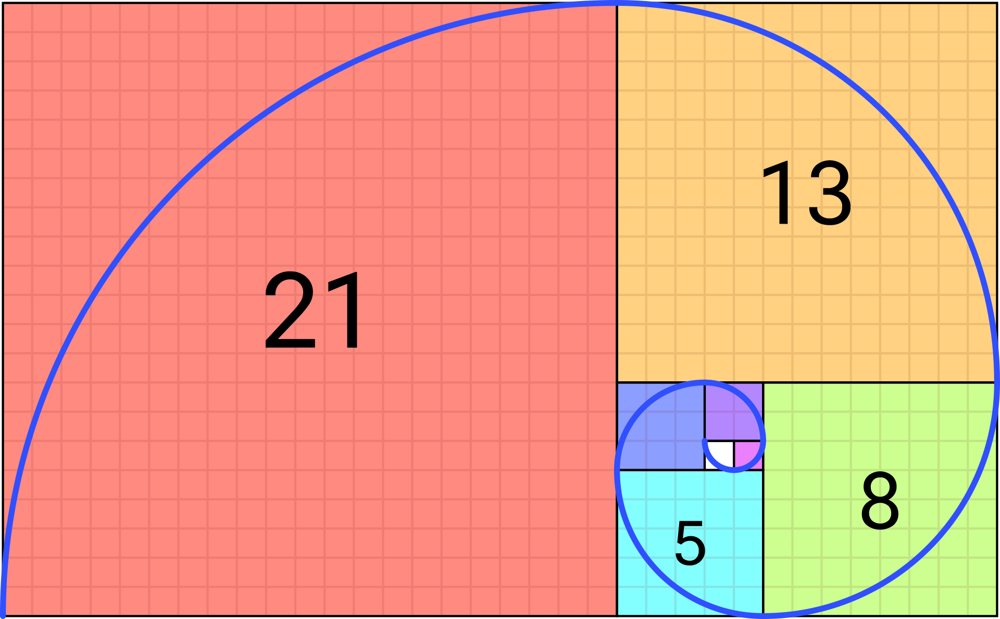

nx
Φ = nx ÷ nx-1
nx
Φ = nx ÷ nx-1
Utwórz generator złotych ciągów. Pierwszy wyraz ciągu to wartość pobrana z pola n01, drugi to wartość pobrana z pola n02, a każdy kolejny to suma dwóch poprzednich. Ilość wyrazów ciągu to liczba w polu "Ile wyrazów złotego ciągu?"
Przyjmij założenie, że zarówno n01 jak i n02 są liczbami całkowitymi, przy czym n01 musi być większe lub równe 2.
Dodatkowo obliczaj i wyświetlaj współczynik proporcji kolejnych wyrazów Φ = nx ÷ nx-1. Obliczenie takie możesz wykonać, począwszy od 2 wyrazy ciągu.
